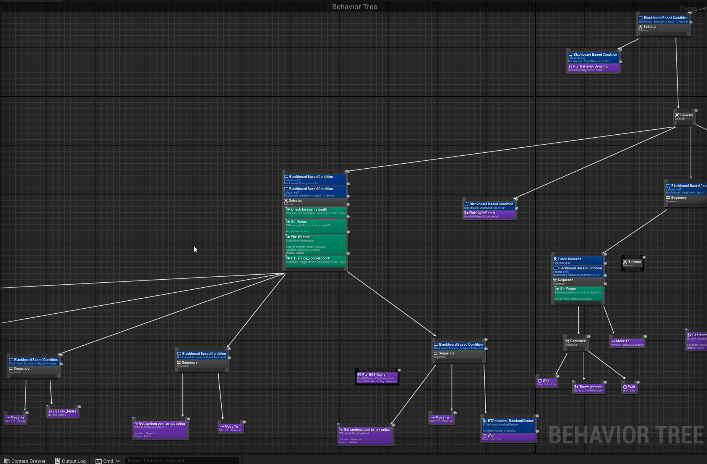

Sacrilege
"Sacrilege" is a multiplayer FPS/RTS hybrid co-op game set in the "Halo" universe. The present gamemode features your team working together to fight the enemies that spawn in waves. As the game progresses, the waves get harder and feature more types of enemies. What sets this apart from your typical wave-based survival gamemode is the presence of a "Commander" mode that you can switch to at any time. In this "Commander" mode, you can use "Requisition power" (which you get from defeating enemies) to call down weapons, vehicles, objects, and, most importantly, AI that you can issues commands to.
I created almost the entire game from scratch using Unreal Engine 4/5, including all of the characters (which can be found in the 'Art' section). I created a lot of different systems such as health systems, physics systems, vehicle systems, character systems, and interactions between the various systems to allow for these various systems trigger each other (such as grenades triggering other grenades, vehicles causing collision damage to explosive barrels, etc).
In Depth AI Behaviors
 The AI of Sacrilege have expansive behiavior trees which allow them to react to the environment around them quickly. They have the ability to evade incoming grenades, commandeer nearby vehicles (which activates a vehicle-specific behavior tree), and most importantly, react to commands given to them by the commander (which includes the player). Every character class has their own AI to make them stand out against other AI. Since "Sacrilege" also includes vehicles, the AI will look to commandeer vehicles which activates a vehicle-specific AI controller and behavior tree.The RTS component
Sacrilege is a hybrid FPS/RTS, which means you primarily play in a first-person perspective shooting down foes, but you also have the ability to switch to a commander mode on the fly which allows you to call down troops, place traps, and give commands.


Garry's Mod Halo SPV3
With a group of collaborators, we ported content from a mod called "SPV3" into "Garry's Mod", while also creating original assets for the mod. We created the shaders and programmed the characters to function similar to how they did in SPV3.
A short video featuring a physics-driven flying code base I created as part of the mod for the dropship vehicles.
Garry's Mod Halo Sentinels
Over the course of some months, I worked to port over a faction of characters from "Halo" (using existing tools) and programmed their behaviors, which include flying, lasering, and death behaviors.